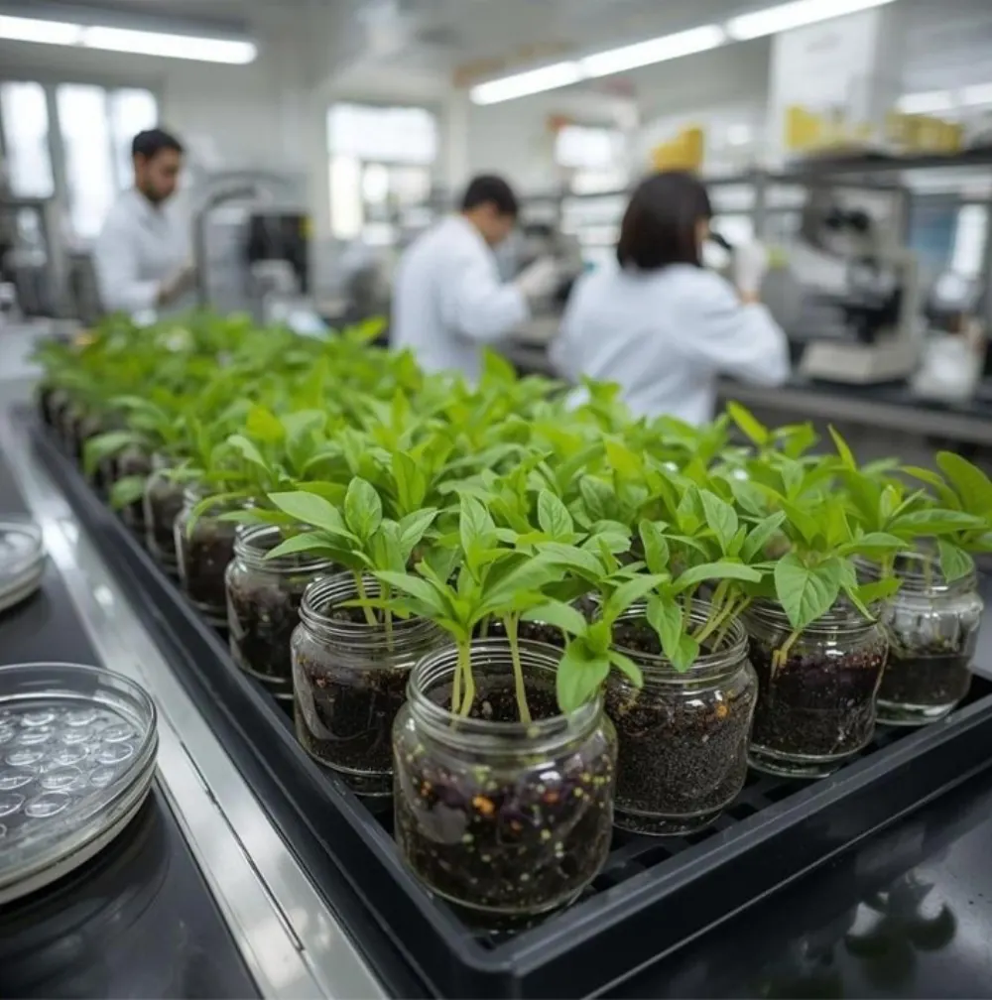
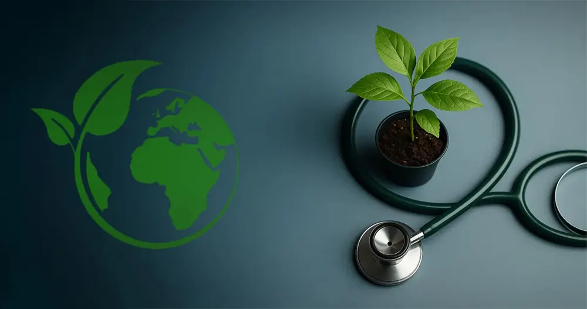
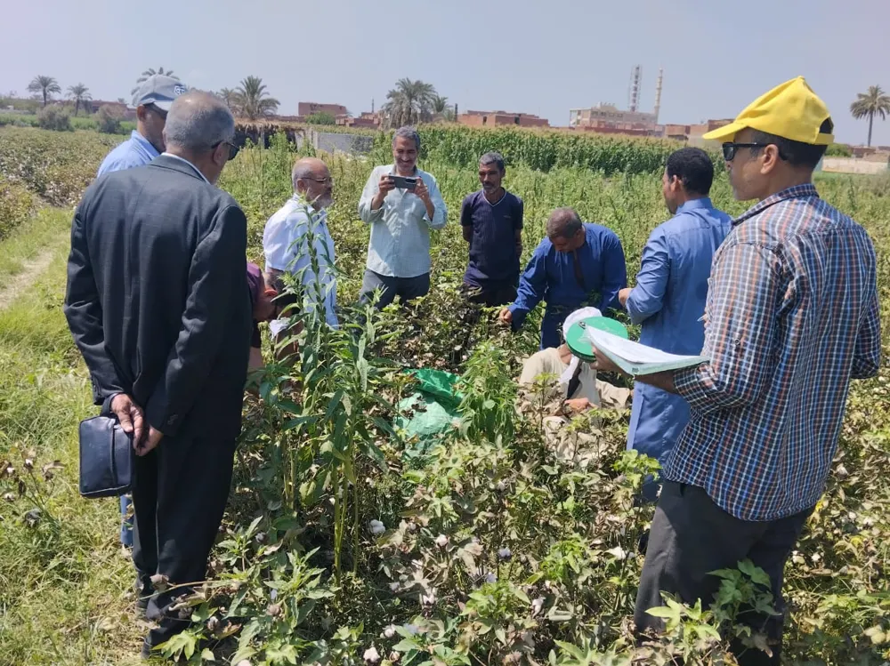
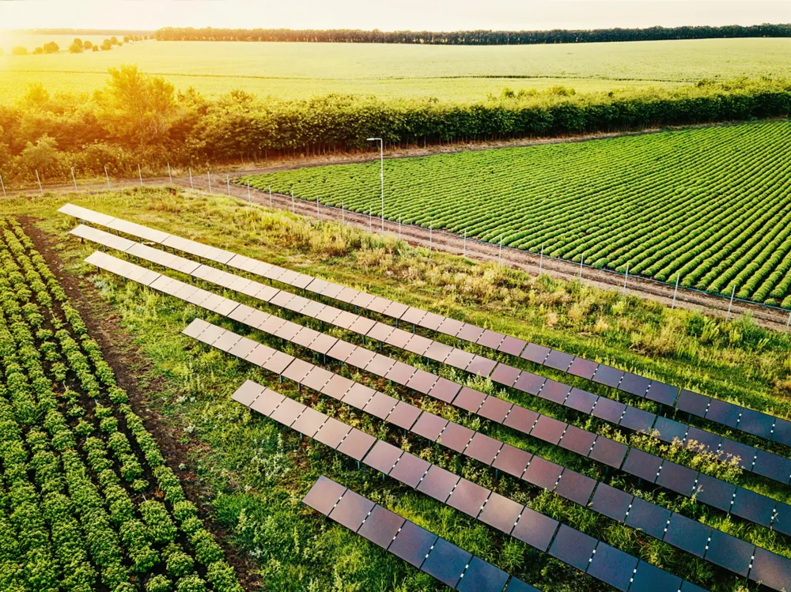

خدماتنا
استشارات وتدريب وتنفيذ في ثمانية مجالات للتنمية المستدامة
من الحقل إلى المصنع إلى المجتمع
اختر المجال لعرض تفاصيله. يمكنك التنقل بين المجالات بالأسهم على لوحة المفاتيح.
التقنيات الزراعية
التقنيات الحديثة، والزراعة الذكية مناخيًا، والزراعة بدون تربة.
أنظمة الري واستصلاح الأراضي
أنظمة الري الحديثة مثل الري بالرش والتنقيط والري المحوري والري بالأمطار المصطنعة والري تحت التربة، واستصلاح الأراضي.
التدوير والتسميد
إنتاج السماد الحيوي والكمبوست والبيوشار (الفحم الحيوي)، وتدوير المخلفات.
الرعاية والصحة
رعاية وإدارة الثروة الحيوانية والداجنة والسمكية والصحة البيطرية.
التصنيع والأمن الحيوي
تصنيع الأعلاف، والاستزراع السمكي المستدام، وتطبيق الأمن الحيوي.

تشخيص الأمراض
التحديد المبكر والدقيق للمسببات المرضية الفطرية والبكتيرية والفيروسية لمنع انتشارها وضياع المحصول.
زراعة الأنسجة
تقنية محورية لإنتاج شتلات ونباتات مطابقة للأم وخالية تمامًا من الفيروسات والأمراض.
المبيدات الحيوية
حلول آمنة ومستدامة لمكافحة الآفات دون ترك متبقيات كيميائية ضارة في المحاصيل.

سلامة الغذاء
لحماية صحة المستهلك وبناء الثقة في الأسواق المحلية والدولية من خلال نظم التتبع الرقمية وممارسات التصنيع الجيد (GMP).
التصنيع الزراعي
لاستغلال الفائض الموسمي وإعطاء المنتجات الزراعية قيمة مضافة وفترات صلاحية ممتدة عبر تقنيات التجفيف الحديثة.
تقليل هدر ما بعد الحصاد
تعزيز كفاءة الموارد المتاحة وزيادة معروض الغذاء دون زيادة المساحات المزروعة بواسطة سلاسل التبريد والتغليف الذكي.
النظم الغذائية الأكثر قدرة على الصمود
بناء نظم غذائية قادرة على الصمود أمام الطقس المتطرف، مما يخفض الانبعاثات الكربونية ويعزز الأمن الغذائي المستقبلي.
أنظمة الطاقة المتجددة
تصميم وتوريد وتركيب وصيانة وحدات الطاقة الشمسية والرياح لتلبية احتياجات المجتمعات والمشاريع الزراعية والصناعية.
كفاءة الطاقة والتكيف
تقديم حلول متكاملة للطاقة المتجددة لرفع كفاءة الاستخدام وخفض الانبعاثات ودعم التكيف المناخي.
الاستشعار عن بعد والأقمار الصناعية
استخدام التقنيات الفضائية لمراقبة المحاصيل وإدارة الموارد ودعم اتخاذ القرار في المزارع الذكية مناخيًا.
الدعم والإرشاد
دعم الحرف اليدوية، ودراسات الجدوى للمشروعات الصغيرة والمتوسطة، وتمكين المرأة والشباب، وخدمات الإرشاد النفسي والمجتمعي.
المسوحات الميدانية والتقييم
إجراء دراسات ميدانية قبل إطلاق المشاريع لتحديد الاحتياجات، وقياس الأثر البعدي لتقييم النجاح وضمان استدامة النتائج.

تأهيل الكوادر والمنشآت
نؤهل الكوادر والمنشآت لمنح تدريب وفق أرقى المواصفات في الحلال وسلامة الغذاء والزراعة.
تفاصيل البرامج
منظومة المنتجات والخدمات الحلال، ومنظومة الجودة وسلامة الغذاء، ومجال الزراعة. شاهد البرامج التدريبية كاملة.

إدارة دورة المشروع بالكامل
من تحديد الاحتياجات والتصميم، إلى التنفيذ والتدريب والمتابعة، وإعداد تقارير قياس الأثر.
شريك محلي موثوق
العمل كجهة تنفيذية واستشارية للمؤسسات الدولية والجهات المانحة.

اللوجستيات والدعم
تنظيم ورش العمل وقاعات التدريب، وتوفير وسائل الانتقال وحجز الفنادق، والخدمات الاستشارية للمشاريع.
الإنشاءات والمستلزمات الزراعية
الأعمال الهندسية الزراعية، وتوريد الشتلات والبذور والأسمدة والثروة الحيوانية والداجنة والسمكية والأعلاف.
التقنيات الحديثة والطاقة
تصميم وتوريد الصوب الزراعية ووحدات تجفيف المحاصيل ومعدات الزراعة الحديثة، وتركيب وصيانة منظومات الطاقة الشمسية والرياح.


لديكم مشروع أو احتياج في أحد هذه المجالات؟
فريقنا من الخبراء جاهز لدراسة احتياجاتكم وتقديم الحل المناسب.